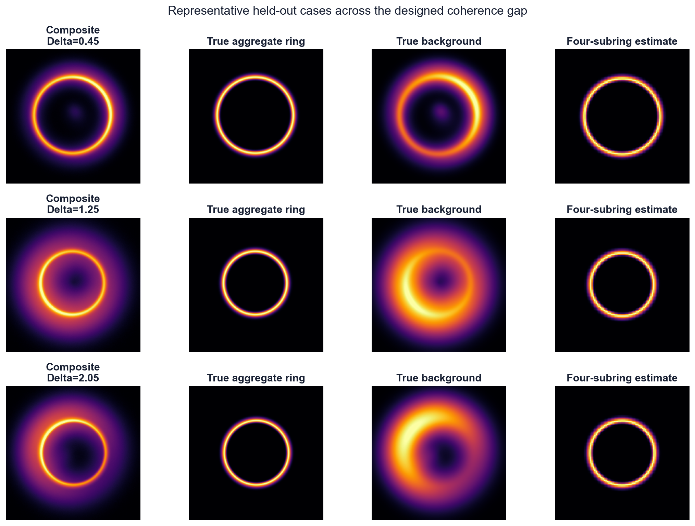
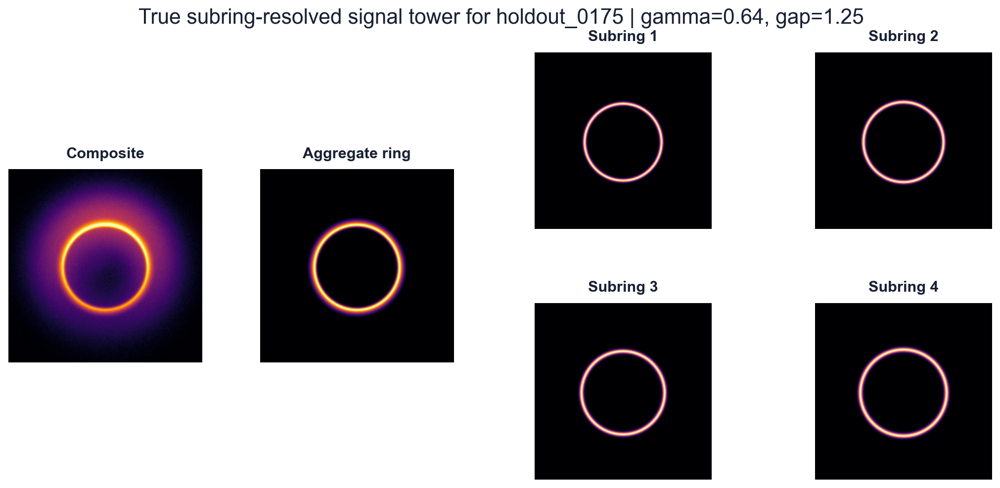
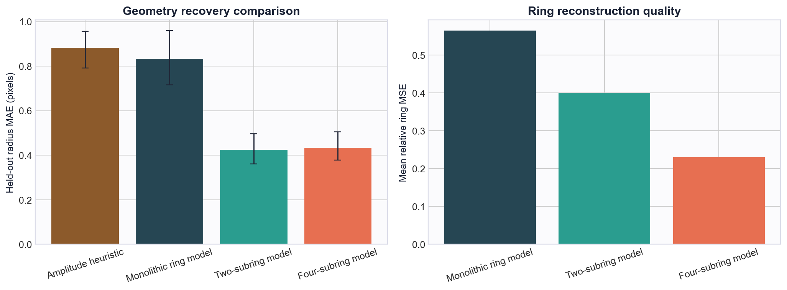
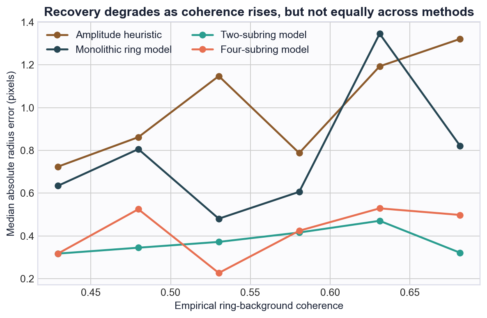
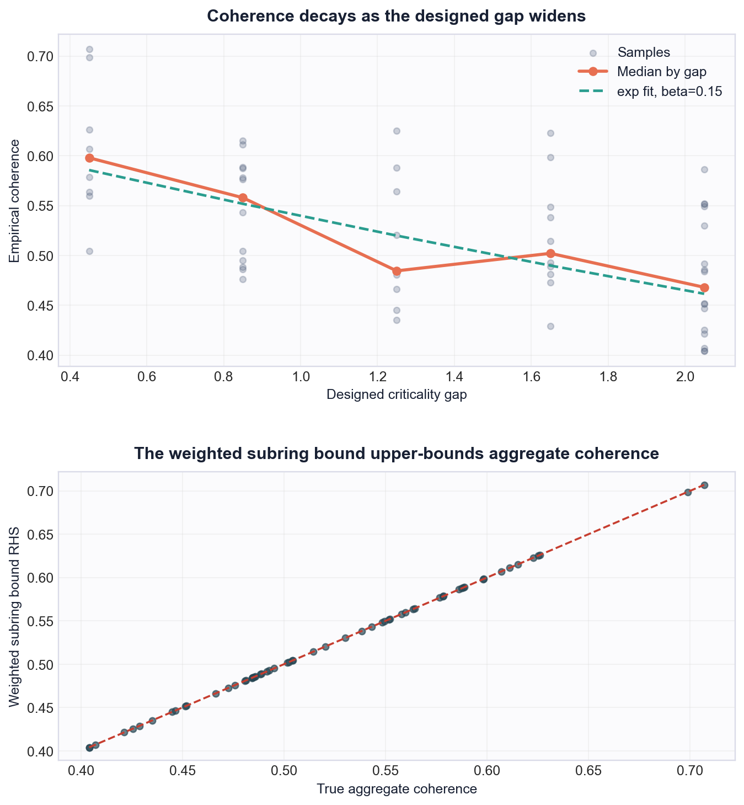
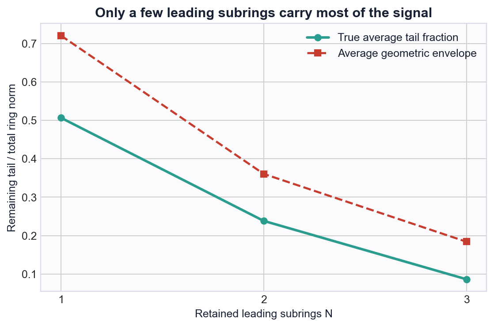

0.424 px
Best hold-out radius MAE from the two-subring model, a 49.1% reduction versus monolithic.
This report adds a second synthetic benchmark without touching the original baseline experiments or the current project landing page. The new suite combines a designed coherence dial with a true subring-resolved signal tower so the newer provenance/coherence and subring mathematics can be tested in a controlled, reproducible setting.
coherence_subring_validation/.
The coherence dial works as intended: widening the designed gap reduces empirical ring-background overlap, with a hold-out gap/coherence correlation of -0.560 and an exponential fit coefficient of beta = 0.15. The subring extension also matters in estimation: adding explicit subring structure nearly halves geometry error relative to both the heuristic baseline and the monolithic structured model.
Best hold-out radius MAE from the two-subring model, a 49.1% reduction versus monolithic.
Lowest mean relative ring MSE from the four-subring model, improving on monolithic by 59.1%.
Held-out samples satisfy the weighted subring upper bound on aggregate coherence in every case.
On average, the first three subrings retain about 91.4% of the total ring norm.
Each image contains a black-hole-like ring signal plus structured nuisance emission. The ring is not a single template. It is generated as a sum of true subrings with exponentially decaying weights, then blurred and corrupted by additive noise. The nuisance class combines a broad crescent, a near-critical shell whose leakage weight depends on the designed gap, and diffuse blobs.
This lets the suite test two questions separately from the original baseline. First, does ring-background overlap fall as the designed gap widens? Second, does a subring-aware estimator recover geometry and morphology better than a single-ring approximation?
The suite is still operator-lite and synthetic. It is not a full ray-traced geodesic transport benchmark. The value here is that the later inequalities are instantiated directly and reproducibly, rather than only argued heuristically.

Across low, medium, and high designed-gap cases, the aggregate ring stays recoverable even as the nuisance field becomes more confounding. The four-subring estimator keeps the ring geometry crisp across the grid.

A single held-out example showing the aggregate image and the four latent subrings that generate it. The later subrings are weaker but still non-negligible, which is why a monolithic one-ring model loses fidelity.
The heuristic amplitude baseline and the monolithic structured model behave similarly on radius recovery. Adding explicit subring structure is the decisive change. The two-subring model gives the lowest radius MAE, while the four-subring model is slightly less sharp on radius but substantially better at reconstructing the full ring morphology.

Subring-aware estimators cut geometry error roughly in half. The four-subring variant produces the cleanest ring reconstruction even though its radius MAE is only marginally above the two-subring model.
| Method | Radius MAE (px) | 90% bootstrap CI | Median abs. error (px) | Mean ring rel. MSE | Gamma MAE |
|---|---|---|---|---|---|
| Amplitude heuristic | 0.883 | 0.792 to 0.956 | 0.928 | - | - |
| Monolithic ring model | 0.833 | 0.717 to 0.959 | 0.631 | 0.564 | - |
| Two-subring model | 0.424 | 0.360 to 0.496 | 0.349 | 0.400 | 0.242 |
| Four-subring model | 0.433 | 0.378 to 0.505 | 0.405 | 0.231 | 0.243 |
Relative to the heuristic baseline, the two-subring and four-subring models improve hold-out radius MAE by 52.0% and 51.0%, respectively.

Every method degrades as ring-background coherence rises, but the subring-aware models degrade far more gracefully. In the highest empirical-coherence third, they still stay near half-pixel mean radius error.

The upper panel shows the intended monotone trend from designed gap to empirical overlap. The lower panel shows the weighted subring bound sitting above the aggregate coherence on every held-out case.
On the hold-out split, the designed gap and empirical coherence correlate at -0.560. The fitted decay curve has scale 0.63 and beta 0.15. In the highest empirical-coherence third, the mean radius errors are still 0.546 px for the two-subring model and 0.560 px for the four-subring model, versus 1.025 px for the monolithic model.
| Empirical coherence band | Amplitude heuristic | Monolithic ring | Two-subring | Four-subring |
|---|---|---|---|---|
| Low coherence | 0.780 | 0.730 | 0.320 | 0.382 |
| Mid coherence | 0.895 | 0.745 | 0.407 | 0.357 |
| High coherence | 0.975 | 1.025 | 0.546 | 0.560 |

The true residual tail falls rapidly as more leading subrings are kept. The geometric envelope stays conservative and decays in the same direction.
The mean remaining tail fraction is 50.7% after keeping only the leading subring, 23.8% after keeping two, and 8.6% after keeping three. The corresponding geometric envelopes are 72.1%, 36.1%, and 18.4%.
This is the main practical reason the two-subring model already performs so well on geometry: it captures the most important correction beyond the monolithic ring. The four-subring model still matters because it recovers the full ring field much more faithfully, which is what the reconstruction-MSE panel highlights.
The new validation path is self-contained. It does not modify the existing baseline datasets, baseline tuning outputs, or the current main landing page.
Equivalent step-by-step commands: